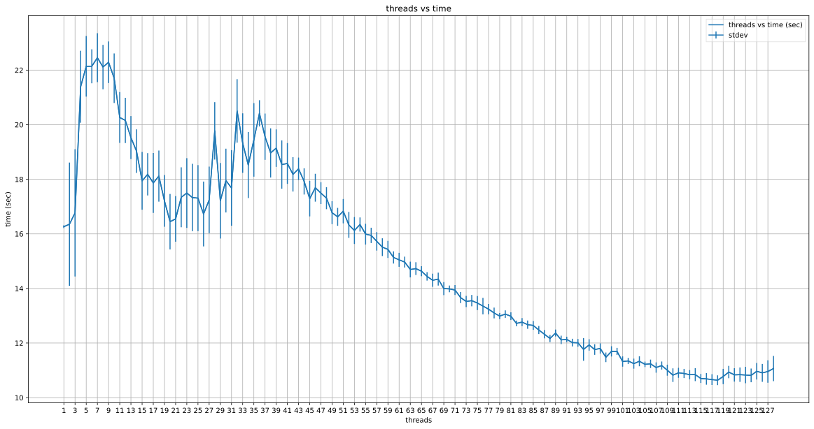
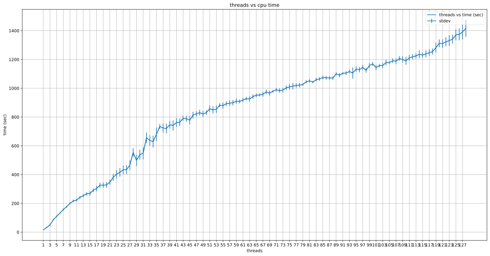

You can interact with this notebook online: Launch interactive version
Profiling the effect of input parameters on TARDIS runtime¶
[1]:
import tardis
from tardis import run_tardis
from tardis.io.config_reader import Configuration
from tardis.io.atom_data.base import AtomData
from tardis.simulation import Simulation
from tardis import run_tardis
from tardis.io.atom_data.util import download_atom_data
download_atom_data('kurucz_cd23_chianti_H_He')
import time
import numpy as np
from astropy import units as u
import csv
import statistics
import matplotlib.pyplot as plt
/usr/share/miniconda3/envs/tardis/lib/python3.7/importlib/_bootstrap.py:219: QAWarning: pyne.data is not yet QA compliant.
return f(*args, **kwds)
/usr/share/miniconda3/envs/tardis/lib/python3.7/importlib/_bootstrap.py:219: QAWarning: pyne.material is not yet QA compliant.
return f(*args, **kwds)
/usr/share/miniconda3/envs/tardis/lib/python3.7/site-packages/traitlets/traitlets.py:3050: FutureWarning: --rc={'figure.dpi': 96} for dict-traits is deprecated in traitlets 5.0. You can pass --rc <key=value> ... multiple times to add items to a dict.
FutureWarning,
Functions for building the dictionaries and interacting with files¶
[2]:
def build_dictionary(fp):
"""
Uses the fp generated from open_file to return a dictionary. Then closes
the file at the end of execution.
'testing_param' : dict
'iteration' : time
Parameters
----------
fp : file
Returns
-------
data_dict : dictionary
"""
data_dict = {}
reader = csv.reader(fp)
for line in reader:
testing_param = int(line[0])
iteration = int(line[1])
time_of_run = float(line[2])
if testing_param not in data_dict:
data_dict[testing_param] = {}
if iteration not in data_dict[testing_param]:
data_dict[testing_param][iteration] = time_of_run
fp.close()
return data_dict
def add_to_dictionary(data_dict, info):
"""
Adds the data to the dictionary
Parameters
----------
data_dict : dictionary
info : list
It is set up as [testing_param, iteration, run_time]
"""
testing_param = info[0]
iteration = info[1]
time_of_run = info[2]
if testing_param not in data_dict:
data_dict[testing_param] = {}
data_dict[testing_param][iteration] = time_of_run
def check_existance(data_dict, info):
"""
Checks to see if a data poitn already exists in data_dict.
Returns true if it exists, false if it does not.
Parameters
----------
data_dict : dictionary
info : list
[testing_param, iteration]
Returns
-------
Boolean
"""
testing_param = info[0]
iteration = info[1]
#Checks if it thread already exists
if testing_param not in data_dict:
return False
#If it does
elif (testing_param in data_dict):
#Does the iteration exist yet
if iteration not in data_dict[testing_param]:
return False
return True
Timing of a specific parameter in TARDIS¶
Number of Threads¶
[3]:
def generate_data(thread_count,
iteration_count,
thread_dictionary,
cpu_timing_dictionary,
tardis_file,
thread_file,
cpu_file,):
"""
This function generates data for running a tardis file on different numbers of threads different times.
It writes the data to two dictionaries and their respecitve files.
This function can be modified to write to as many or as few dictionaries and files as necessary.
In order to test different parameters, the index into the tardis_config must be adjusted. This must be done
manually in order to select the correct testing parameter.
Parameters
----------
thread_count : int
Max number of threads to be tested
iteration_count : int
Amount of testing on each thread
thread_dictionary : dict
cpu_timing_dictionary : dict
tardis_file : str
TARDIS config file
thread_file : str
.csv file name
cpu_file : str
.csv file name
"""
tardis_config = Configuration.from_yaml(tardis_file)
for threads in range(1, thread_count+1):
for i in range(1, iteration_count+1):
#Continue if this data point already exists. If it exists in one it exists in both
if check_existance(thread_dictionary, [threads, i]):
continue
print(threads, " : ", i)
tardis_config["montecarlo"]["nthreads"] = threads
sim = Simulation.from_config(tardis_config)
start = time.monotonic()
sim.run()
end = time.monotonic()
run_time = end-start
add_to_dictionary(thread_dictionary, [threads, i, run_time])
add_to_dictionary(cpu_timing_dictionary, [threads, i, (run_time * threads)])
with open(thread_file, "a") as data_file:
data_file.write("{}, {}, {}\n".format(threads, i, run_time))
with open(cpu_file, "a") as data_file:
data_file.write("{}, {}, {}\n".format(threads, i, run_time * threads))
print("Completed")
[4]:
TARDIS_FILE = 'tardis_example.yml'
STORAGE_FILE = 'threads_dict_128_threads_1_node.csv'
CPU_STORAGE_FILE = 'cpu_threads_dict_128_threads_1_node.csv'
#Compile the numba functions
run_tardis(TARDIS_FILE)
#Opens file and builds the dictionary
with open(STORAGE_FILE, "r") as threads_fp:
threads_dict = build_dictionary(threads_fp)
with open(CPU_STORAGE_FILE, "r") as cpu_fp:
cpu_threads_dict = build_dictionary(cpu_fp)
#Creates list of main data
threads_numbers = [i for i in range(1, 129, 1)]
cpu_threads_numbers = [i for i in range(1, 129, 1)]
generate_data(128, 30, threads_dict, cpu_threads_dict, TARDIS_FILE, STORAGE_FILE, CPU_STORAGE_FILE)
Completed
[5]:
def create_stat_dictionaries(main_dict):
"""
This builds two dictionaries, one that holds the mean of the data and the other that holds the stdev
Parameters
----------
main_dict : dict
Data dictionary, format of
testing_param : dictionary
iteration : time
Returns
-------
main_dict_mean : dict
main_dict_stdev : dict
"""
main_dict_list = {}
for thread, iteration_dict in main_dict.items():
main_dict_list[thread] = [v for (k, v) in iteration_dict.items()]
main_dict_mean = {}
main_dict_stdev = {}
for thread, timing_list in main_dict_list.items():
main_dict_mean[thread] = statistics.mean(timing_list)
main_dict_stdev[thread] = statistics.stdev(timing_list)
return main_dict_mean, main_dict_stdev
threads_dict_mean, threads_dict_stdev = create_stat_dictionaries(threads_dict)
cpu_threads_dict_mean, cpu_threads_dict_stdev = create_stat_dictionaries(cpu_threads_dict)
[6]:
def graph_data(testing_params, mean_dict, stdev_dict, x_axis_title, y_axis_title, graph_title, text_labels=False):
"""
Uses pyplot to graph the data given the mean and standard deviation of data.
Parameters
----------
testing_params : list
This is a list of the testing parameters, which is used for the axis construction.
mean_dict : dict
stdev_dict : dict
x_axis_title : str
y_axis_title : str
graph_title : str
text_labels : bool
This is a boolean parameter for if the testing parameters are text. If they are text, then
it will set each tick mark on the x-axis to be a label in testing_params.
"""
lists = sorted(mean_dict.items())
lists_stdev = sorted(stdev_dict.items())
x, y = zip(*lists)
x_stdev, y_stdev = zip(*lists_stdev)
fig = plt.figure(figsize=(20,10))
ax = fig.add_subplot(1,1,1)
ax.set_xlabel(x_axis_title)
ax.set_ylabel(y_axis_title)
ax.set_title(graph_title)
ax.grid(True)
if text_labels:
xtick_spacer = np.arange(0, len(testing_params), 1)
xticks = testing_params
ax.set_xticks(xtick_spacer)
ax.set_xticklabels(xticks, rotation='horizontal', fontsize=18)
elif not text_labels:
#If there are a lot of ticks, it will reduce for visibility.
interval = testing_params[1] - testing_params[0]
if len(testing_params) > 80:
xticks = np.arange(testing_params[0], testing_params[-1]+interval, interval*2)
else:
xticks = np.arange(testing_params[0], testing_params[-1]+interval, interval)
ax.set_xticks(xticks)
ax.plot(x, y, color='tab:blue', label="{} vs {}".format(x_axis_title, y_axis_title))
plt.errorbar(x, y, yerr=y_stdev, label='stdev')
leg = plt.legend(loc='best', ncol=1, mode='expanded', fancybox=False)
leg.get_frame().set_alpha(0.5)
graph_data(threads_numbers, threads_dict_mean, threads_dict_stdev, "threads", "time (sec)", "threads vs time")
graph_data(cpu_threads_numbers, cpu_threads_dict_mean, cpu_threads_dict_stdev, "threads", "time (sec)", "threads vs cpu time")

